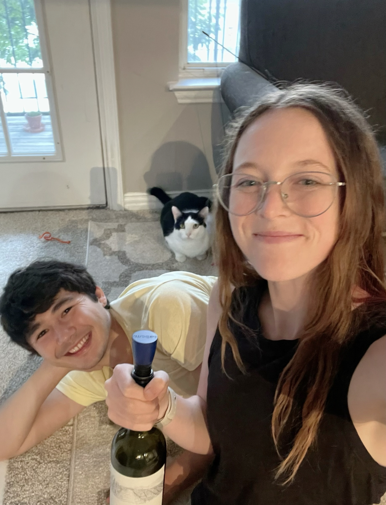

Vino Nobile di Montepulciano
What is it?
Vino Nobile di Montepulciano is a red wine from Tuscany, Italy. This wine is actually just a name for a particular type of wine made from Sangiovese grapes. Sangiovese grapes are extremely rarely planted outside of Italy. The name Vino Nobile di Montepulciano translates loosely to "noble wine of Montepulciano", where Montepulciano refers to the region of Italy of the same name. Sangiovese grapes are known for having full body and high tannin, as well as higher alcohol content. A DOCG Vino Nobile di Montepulciano wine must have at least 70% Sangiovese grapes. Vino Nobile di Montepulciano wines are aged for a minimum of 2 years, though many are aged longer.
Our wine was a bright, ruby red color; most Vino Nobile di Montepulciano wines are a medium-to-bright red. Primary flavors of this grape are cherry, roasted tomato, sweet balsamic, oregano, and espresso. We had this wine with vegetarian enchiladas, which fits with the suggested pairing of vegetable and spice-driven foods. We were recommended this wine by a friend of WOTW (thanks, Jenny!).
Molly's Rating and Tasting Notes
7.2. The nose is very alcoholic. It smells like a stereotypical red wine. The taste is a shocking contrast of interesting flavors. It has the semblance of sweetness, but as a whole, it is tannic and drier than I prefer. Some flavors I can (almost) pick out are Italian seasoning and cherry tomato. The finish is similar to burnt toast. I can imagine this being good with bruschetta. Not really my type of wine, but I was able to drink enough of the wine to get a good read on it.
Ryan's Rating and Tasting Notes
8.7. On the nose I get cacao powder, lead shavings, oregano, and crushed red pepper. There are also some hints of date and molasses towards the top of the rim. Upon tasting, it is not very dry nor very sweet. It's quite the juicy little thing though and does a good job coating the mouth. Some tasting notes I get are onion powder, sun-dried tomato, old book, cherrry, and possibly swiss chard. The finish is quite short which I enjoy as it brings me back in for another delightful sip. Overall it is a very interesting and fun wine that paired surprisingly well with our enchiladas. It's quite the fun trip and I would definitely recommend if you like more tannic flavors.
References
[1] Madeline Puckette and Justin Hammack. Wine Folly: The Master Guide. Avery - A Penguin Imprint, New York, NY, 2018.
[2] "Guide to Sangiovese Wine." Wine Folly. https://winefolly.com/deep-dive/guide-to-sangiovese-wine/. Accessed: August 2023.
Wines we haven't finished
- None this week!